100%
VNNS is a browser-based tool that lets you design, visualize and train neural networks interactively, with no installation required.
You build your network visually on a canvas — adding layers, connecting neurons, and configuring parameters — then train it on your own data and watch the process in real time.
The interface is split into a canvas where you see your network topology, and side panels for creating layers, loading datasets, configuring training, and running predictions.
Under the hood, the neural network engine is written in C and compiled to WebAssembly, so all computation runs at near-native speed directly in the browser — no server needed.
1. Create — Add layers (input, hidden, output) and connect them. Choose activation functions and configure neuron counts.
2. Dataset — Load or create a dataset. Use built-in synthetic datasets like XOR, Circle, or Spiral, or import your own CSV data.
3. Train — Set the learning rate, epochs, and loss function, then start training. Watch the loss curve update live and see weights and activations change on the canvas.
4. Predict — Feed new inputs to the trained network and see its output. Visualize decision boundaries for classification tasks.
• Drag-and-drop canvas with zoom, pan, and minimap
• Real-time weight and activation visualization
• Decision boundary overlay
• Light and dark themes
• Export and import network topologies as JSON
• Undo / redo for all actions
• Keyboard shortcuts for fast workflow
A neural network is a computational model inspired by the way biological neurons in the brain process information. It consists of interconnected nodes (neurons) organized in layers that learn to recognize patterns in data.
At its core, a neural network takes numerical inputs, transforms them through a series of mathematical operations, and produces outputs — learning from examples rather than being explicitly programmed with rules.
A typical neural network has three types of layers:
Input layer — receives the raw data. Each neuron represents one feature of the input (e.g., a pixel value, a measurement, a category).
Hidden layers — the intermediate layers where the actual learning happens. Each layer extracts increasingly abstract features from the data. Deeper networks can learn more complex patterns.
Output layer — produces the final result. For classification, each neuron might represent a class; for regression, a single neuron outputs a continuous value.
Neural networks learn through a process called training. During training, the network:
1. Makes a prediction based on input data (forward pass)
2. Measures how wrong the prediction was using a loss function
3. Calculates how to adjust each weight to reduce the error (backpropagation)
4. Updates the weights by a small amount controlled by the learning rate
This cycle repeats thousands of times across the dataset. Each full pass through the data is called an epoch. Over time, the network converges to weights that produce accurate predictions.
The key insight is the Universal Approximation Theorem: a neural network with at least one hidden layer and enough neurons can approximate any continuous function to arbitrary precision. This means neural networks are theoretically capable of learning virtually any input-output mapping, given enough data and capacity.
• Image recognition — identifying objects, faces, medical scans
• Natural language processing — translation, chatbots, text generation
• Speech recognition — voice assistants, transcription
• Autonomous systems — self-driving cars, robotics
• Game playing — AlphaGo, game AI agents
• Scientific research — protein folding, drug discovery, climate modeling
A neuron (also called a node or unit) is the fundamental building block of a neural network. It is loosely inspired by biological neurons in the brain — cells that receive electrical signals, process them, and send signals to other neurons.
Each artificial neuron performs a simple three-step computation:
1. Weighted sum — The neuron receives one or more inputs (x₁, x₂, ..., xₙ) and multiplies each by a corresponding weight (w₁, w₂, ..., wₙ). It then sums all the products and adds a bias term (b):
z = w₁·x₁ + w₂·x₂ + ... + wₙ·xₙ + b
2. Activation function — The weighted sum z is passed through an activation function f(z) to produce the neuron's output. This introduces non-linearity, enabling the network to learn complex patterns beyond simple linear relationships.
output = f(z)
3. Output — The result is sent as input to neurons in the next layer, or becomes the final prediction if the neuron is in the output layer.
Weights determine how much influence each input has on the neuron's output. A large positive weight means the input strongly activates the neuron; a large negative weight means it strongly inhibits it. During training, the network adjusts weights to minimize prediction errors.
The bias is an additional parameter that allows the neuron to shift its activation function left or right. Without bias, the neuron would always pass through the origin. Think of it as the neuron's threshold — it controls how easy it is for the neuron to "fire" regardless of the inputs.
In the brain, a biological neuron collects electrical signals through its dendrites, processes them in the cell body, and if the combined signal exceeds a threshold, it fires an electrical impulse along its axon to other neurons. The artificial neuron mimics this: inputs are like dendrites, the weighted sum and activation are like the cell body's decision, and the output is like the axon signal.
The simplest neural network is a single neuron called a Perceptron, proposed by Frank Rosenblatt in 1958. It uses a step function as its activation: output is 1 if the weighted sum exceeds a threshold, 0 otherwise. A single perceptron can learn linearly separable problems (like AND and OR gates) but cannot solve non-linear problems (like XOR) — which is why we need multiple neurons and layers.
In VNNS, neurons are represented as circles inside layer boxes on the canvas. You can see each neuron's activation value when the network is running, and the connection lines show the weights between neurons. The color intensity of connections reflects the weight magnitude — enabling you to visually understand what the network has learned.
Neurons in a neural network are organized into layers — groups of neurons that process data at the same stage. Data flows from one layer to the next, with each layer transforming the representation before passing it forward.
The first layer of the network. It doesn't perform any computation — it simply receives the raw input data and passes it to the next layer. The number of neurons in the input layer equals the number of features in your data.
For example, if your dataset has 2 features (like x and y coordinates), the input layer has 2 neurons. If you're processing a 28×28 pixel image, it has 784 neurons (one per pixel).
The layers between input and output are called hidden layers because their values are not directly observed in the training data. This is where the network learns internal representations of the data.
Each hidden layer extracts increasingly abstract features. In an image classifier, the first hidden layer might detect edges, the second might detect shapes, and deeper layers might recognize objects.
Width vs depth: The number of neurons in a layer is its width. The number of layers is the network's depth. A "deep" neural network has many hidden layers — this is where the term deep learning comes from.
How many neurons? There's no universal rule. Too few neurons and the network can't capture the pattern (underfitting). Too many and it may memorize the training data (overfitting). Common practice is to start with a reasonable number and experiment.
The last layer produces the network's final prediction. Its structure depends on the task:
Binary classification — 1 neuron with Sigmoid activation (output between 0 and 1, interpreted as probability).
Multi-class classification — N neurons (one per class), typically with Softmax activation so outputs sum to 1.
Regression — 1 or more neurons with no activation (or linear), outputting continuous values.
In a fully connected (or dense) layer, every neuron is connected to every neuron in the previous layer. This is the most common layer type in simple neural networks and the type used in VNNS. Each connection has its own weight, so a layer with M inputs and N neurons has M × N weights plus N biases.
Data moves in one direction — from input to output — in what's called a feedforward architecture. At each layer, every neuron computes its weighted sum, adds its bias, applies the activation function, and sends the result to the next layer. This entire process is the forward pass.
Layers appear as rectangular boxes on the canvas, containing their neurons as circles. You can add layers from the Create panel (or press L), choose the layer type (input, hidden, output), set the number of neurons, and select an activation function. Use Auto Connect (Ctrl+Shift+A) to wire all layers together automatically.
Weights and biases are the learnable parameters of a neural network — the numbers the network adjusts during training to make accurate predictions. Everything the network "knows" is encoded in these values.
A weight is a number associated with each connection between two neurons. It determines how much influence one neuron's output has on the next neuron's input.
Positive weight — the input excites the next neuron (pushes its activation higher).
Negative weight — the input inhibits the next neuron (pushes its activation lower).
Weight near zero — the connection has little effect; the input is essentially ignored.
The magnitude of a weight indicates the strength of the connection. A weight of 2.5 has more influence than a weight of 0.3.
Each neuron has a single bias value added to its weighted sum before the activation function is applied. The bias shifts the activation function, allowing the neuron to activate even when all inputs are zero.
z = w₁·x₁ + w₂·x₂ + ... + wₙ·xₙ + b
Think of the bias as setting a baseline. A positive bias makes the neuron more likely to activate; a negative bias makes it harder to activate. Without biases, the decision boundaries learned by the network would always have to pass through the origin.
Before training, weights must be initialized. The choice of initial values matters significantly:
All zeros — Never do this. All neurons in a layer would compute the same output and receive the same gradient, so they'd never differentiate (the "symmetry problem").
Random small values — The most common approach. Weights are drawn from a small random distribution (e.g., Gaussian with mean 0). This breaks symmetry and allows each neuron to learn different features.
Xavier/Glorot initialization — Scales random values by the number of inputs and outputs of the layer. Helps maintain stable signal variance through deep networks, especially with Sigmoid and Tanh activations.
He initialization — Similar to Xavier but scaled for ReLU activations, which zero out half the signal. Uses a larger variance to compensate.
During training, the network uses backpropagation to calculate how much each weight and bias contributed to the prediction error. Then, each parameter is nudged in the direction that reduces the error, scaled by the learning rate:
w_new = w_old − learning_rate × ∂loss/∂w
This process repeats for every training example (or batch) across many epochs until the weights converge to values that produce good predictions.
Toggle Show Weights (press W) to see weight values on the connection lines. The color intensity of connections reflects the weight magnitude — bright colors mean strong connections, faint colors mean weak ones. You can also inspect individual weights and biases by selecting a neuron in the properties panel.
An activation function is a mathematical function applied to a neuron's weighted sum to determine its output. Without activation functions, a neural network would just be a series of linear transformations — no matter how many layers, it could only learn linear relationships.
Activation functions introduce non-linearity, which is what allows neural networks to approximate complex, non-linear functions and solve problems like image recognition, language understanding, and game playing.
σ(z) = 1 / (1 + e⁻ᶻ)
Squashes any input to a value between 0 and 1. Historically very popular, it has a smooth S-shaped curve. Useful for output layers in binary classification (interpreting the output as a probability).
Downsides: Suffers from the vanishing gradient problem — for very large or very small inputs, the gradient is nearly zero, which slows down learning in deep networks. Also, outputs are not zero-centered.
tanh(z) = (eᶻ − e⁻ᶻ) / (eᶻ + e⁻ᶻ)
Similar to Sigmoid but outputs between −1 and 1, making it zero-centered. This generally leads to faster convergence than Sigmoid because gradients are not systematically biased in one direction.
Downsides: Still suffers from vanishing gradients at the extremes, though less severely than Sigmoid.
ReLU(z) = max(0, z)
The most widely used activation function in modern networks. It outputs the input directly if positive, or zero otherwise. Extremely simple and computationally efficient.
Advantages: Doesn't suffer from vanishing gradients for positive values. Leads to sparse activations (many neurons output exactly 0), which can be computationally efficient.
Downsides: The dying ReLU problem — if a neuron's weighted sum is always negative, its gradient is permanently zero, and the neuron stops learning entirely.
softmax(zᵢ) = eᶻⁱ / Σⱼ eᶻʲ
Used in the output layer for multi-class classification. It converts a vector of raw scores into a probability distribution — all outputs are positive and sum to 1. The class with the highest probability is the prediction.
Hidden layers — Start with ReLU. It works well in most cases and trains fast.
Binary classification output — Use Sigmoid (output is a probability between 0 and 1).
Multi-class classification output — Use Softmax (output is a probability distribution).
Regression output — Use no activation (linear) so the output can be any value.
When creating or editing a layer, you can select the activation function from a dropdown. VNNS supports ReLU, Sigmoid, and Tanh. You can observe how different activations affect the neuron outputs during training — neurons with ReLU will show 0 for negative inputs, while Sigmoid neurons will show values smoothly compressed between 0 and 1.
A loss function (also called cost function or objective function) measures how wrong the network's predictions are compared to the expected output. The goal of training is to minimize this value.
The loss function gives the network a single number that summarizes its performance. A loss of 0 means perfect predictions; higher values mean worse performance. The network uses this signal to figure out which direction to adjust its weights.
MSE = (1/n) × Σ(yᵢ − ŷᵢ)²
The average of the squared differences between predicted values (ŷ) and actual values (y). Used primarily for regression tasks where the output is a continuous number.
Why squared? Squaring penalizes large errors more than small ones, and makes the function differentiable everywhere (needed for gradient-based optimization). A prediction off by 2 contributes 4 to the loss, while one off by 10 contributes 100.
BCE = −(1/n) × Σ[yᵢ·log(ŷᵢ) + (1−yᵢ)·log(1−ŷᵢ)]
Used for binary classification (two classes: 0 or 1). It measures the difference between two probability distributions. When the prediction is confident and correct, the loss is low; when confident and wrong, the loss is very high — which creates strong gradients for learning.
CCE = −Σ yᵢ·log(ŷᵢ)
The multi-class extension of binary cross-entropy. Used when there are more than two classes, typically paired with a Softmax output layer. The target is a one-hot encoded vector (e.g., [0, 1, 0] for class 2).
Regression (predicting numbers) → MSE
Binary classification (yes/no, true/false) → Binary Cross-Entropy + Sigmoid output
Multi-class classification (cat/dog/bird) → Categorical Cross-Entropy + Softmax output
During training, the loss value is recorded at each epoch and plotted as a loss curve. A healthy training session shows the loss steadily decreasing over time. If the loss stops decreasing, the network may have converged. If it increases, something might be wrong (learning rate too high, or bugs in the data).
You select the loss function in the Train panel before starting training. VNNS supports MSE and Cross-Entropy. The loss curve is displayed in real time as a chart during training, so you can monitor convergence and decide when to stop.
Backpropagation (short for "backward propagation of errors") is the algorithm that makes neural network training possible. It efficiently calculates how much each weight and bias contributed to the prediction error, then uses that information to update them.
After a forward pass produces a prediction and the loss function measures the error, the network needs to know: "which weights should I increase, and which should I decrease, to reduce the error?" Backpropagation answers this by computing the gradient of the loss with respect to every weight in the network.
Backpropagation relies on the chain rule of calculus. Since the loss depends on the output, which depends on the last layer's weights, which depend on the previous layer's outputs, and so on — the gradient can be computed layer by layer, working backward from the output to the input.
∂loss/∂w = ∂loss/∂output × ∂output/∂z × ∂z/∂w
Each factor in this chain is simple to compute. The power of backpropagation is that it reuses intermediate results — gradients computed for one layer are passed backward to compute gradients for the previous layer.
1. Forward pass — Input data flows through the network, layer by layer, producing a prediction. All intermediate values (weighted sums and activations) are stored.
2. Compute loss — The loss function compares the prediction to the expected output, producing a single error value.
3. Backward pass — Starting from the loss, compute the gradient at the output layer. Then propagate it backward through each layer, computing how much each weight contributed to the error.
4. Update weights — Adjust every weight and bias by subtracting a fraction (the learning rate) of its gradient. This is the gradient descent step.
Backpropagation computes the gradients; gradient descent uses them to update the weights. Think of the loss as a landscape with hills and valleys. The gradient points "uphill" — so we move in the opposite direction (downhill) to find the minimum loss.
w_new = w_old − learning_rate × gradient
A naive approach would compute the gradient for each weight independently — extremely slow for networks with millions of parameters. Backpropagation computes all gradients in a single backward pass by reusing intermediate calculations, making it proportional in cost to a single forward pass.
Vanishing gradients — In deep networks with Sigmoid/Tanh activations, gradients can become extremely small as they propagate backward, causing early layers to learn very slowly. ReLU and modern initialization techniques help mitigate this.
Exploding gradients — The opposite problem: gradients become extremely large, causing unstable weight updates. Gradient clipping (capping gradient values) is a common fix.
During training, VNNS runs backpropagation automatically for each training iteration. You can observe the effects in real time: watch the weights change on the canvas connections, see activation values shift, and track the loss curve decreasing as the network learns.
The learning rate is a hyperparameter that controls how much the weights are adjusted during each training step. It determines the size of the steps the network takes when descending the loss landscape toward a minimum.
w_new = w_old − learning_rate × gradient
A learning rate that is too large causes the network to take big steps, potentially overshooting the optimal values. The loss might oscillate wildly or even increase over time instead of decreasing. In extreme cases, the weights can diverge to infinity (NaN values).
A learning rate that is too small makes training extremely slow. The network takes tiny steps and may need an impractical number of epochs to converge. It can also get stuck in local minima — suboptimal solutions that appear to be the best from the network's perspective but aren't globally optimal.
The ideal learning rate allows the network to converge quickly and reliably. In practice, typical values range from 0.001 to 0.1. A common starting point is 0.01.
Start with 0.01 and observe the loss curve. If loss decreases smoothly, the rate is reasonable.
If loss oscillates or explodes, reduce the learning rate (try 0.001 or 0.0001).
If loss decreases very slowly, increase the learning rate (try 0.05 or 0.1).
Learning rate schedules — Advanced technique where the learning rate starts high and decreases over time. This allows fast initial progress followed by fine-grained convergence near the end.
Imagine you're blindfolded on a hilly terrain and trying to find the lowest valley. The gradient tells you which direction is downhill, and the learning rate determines how large a step you take. Too large and you leap over valleys; too small and you take hours to reach the bottom.
Set the learning rate in the Train panel before starting training. Watch the loss curve to evaluate your choice — if it's not converging well, stop, adjust the rate, and retrain. VNNS lets you experiment quickly since training runs in real time.
Overfitting occurs when a neural network memorizes the training data instead of learning the underlying patterns. The network performs exceptionally well on training data but fails to generalize to new, unseen data.
A network with too many parameters relative to the amount of training data has enough capacity to memorize every training example, including noise and outliers. Instead of learning the general rule "circles are round," it learns "this specific circle has these exact pixel values."
The telltale sign is a gap between training loss and validation loss. If the training loss continues to decrease while the validation loss starts increasing, the network is overfitting — it's getting better at the training data but worse at new data.
In the loss curve, overfitting looks like a point where the training loss and validation loss diverge. Before that point, the network is learning useful patterns; after it, the network is memorizing.
Underfitting — The model is too simple to capture the pattern. Both training and validation loss are high. The solution is a more complex model or more training.
Overfitting — The model is too complex for the data. Training loss is low but validation loss is high. The solution is regularization, more data, or a simpler model.
The goal is the sweet spot between the two — a model complex enough to capture the pattern but not so complex that it memorizes noise.
More data — The most effective solution. More training examples make it harder for the network to memorize instead of generalize.
Simpler model — Fewer layers or fewer neurons per layer reduces the network's capacity to memorize.
Early stopping — Stop training when the validation loss stops improving, before overfitting begins.
Regularization — Techniques like L1/L2 regularization add a penalty for large weights, encouraging simpler solutions. Dropout randomly disables neurons during training, forcing the network to learn redundant representations.
Data augmentation — Artificially increase the dataset size by creating modified versions of existing data (rotations, flips, noise).
Watch the loss curve during training. If you notice the loss plateauing or starting to fluctuate after a period of decrease, the network may be overfitting. Try reducing the number of neurons or layers, using a simpler architecture, adding more data points, or training for fewer epochs.
The canvas is the central workspace where you build and visualize your neural network. Layers appear as labeled boxes, neurons as circles inside them, and connections as lines between neurons.
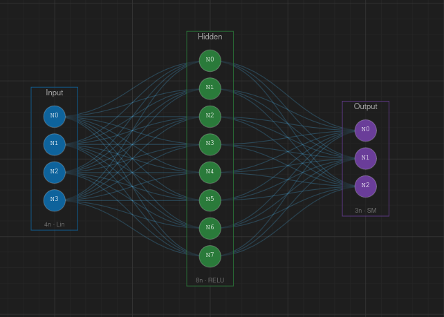
Pan — Middle-click and drag, or hold Alt and click-drag to move around the canvas.
Zoom — Scroll the mouse wheel to zoom in and out (range 10%–500%). You can also use Ctrl++ and Ctrl+-, or the zoom buttons in the bottom toolbar.
Fit to Content — Press F to automatically zoom and center the view on your network.
Click a layer or neuron to select it. Hold Shift and click to select multiple items. Press Delete, Backspace, or X to remove the selection. Press Escape to deselect everything.
Drag layers to reposition them — they snap to the grid by default (20 px spacing). You can also drag individual neurons between layers to reorganize your network.
The toolbar at the bottom of the canvas provides quick access to view controls.
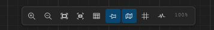
From left to right: Toggle Grid (G), Snap to Grid, Toggle Minimap (M), Show Weights (W), Show Activations, Zoom Out, Zoom percentage, Zoom In, Fit to Content.
A minimap appears in the bottom-right corner showing an overview of the entire network. Click or drag inside the minimap to quickly pan the canvas. Toggle it with M.
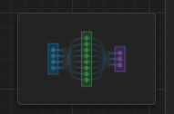
Press W to toggle weight visualization. Connections are colored by sign — blue for positive weights and red for negative — with line thickness and color intensity proportional to the weight magnitude.
When enabled, neuron colors change to reflect their activation values during training. A glow effect highlights highly activated neurons. Activations update every 50 epochs.
The canvas adapts its level of detail as you zoom. At very low zoom (< 25%), layers are shown as simple boxes with arrows. Between 25%–50%, layers collapse into compact dot groups. Above 50%, all neurons, labels, and connection details are fully rendered.
Hover over any element to see a tooltip with its details:
Layer — name, neuron count, activation function, bias status, weight initialization.
Neuron — label, parent layer, activation, bias value, incoming/outgoing connection counts, current activation value.
Connection — weight value, sign, source and target neurons.
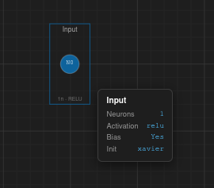
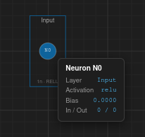
Select a layer and a floating toolbar appears above it with quick actions: Rename, Duplicate, Add Neuron, Set Neuron Count, Change Activation, and Change Color.
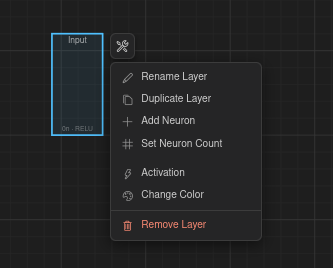
Right-click different elements to access context-specific actions:
Canvas — Add Layer Here, Add Neuron to Selected, Auto Connect, Auto Layout, Clear Connections, Clear Canvas.
Layer — Add Neuron, Rename, Duplicate, Remove.
Neuron — Start Connection, Remove.
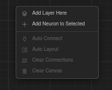
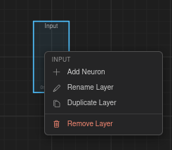
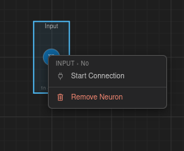
The Create panel (sidebar icon 1, or press 1) contains tools for building your network topology.
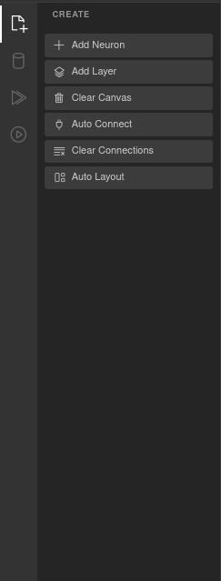
Add Layer (L) — Creates a new layer on the canvas. Each layer is placed with default settings that you can modify via the Properties panel or the context toolbar.
Add Neuron (A) — Adds a neuron to the currently selected layer. If no layer is selected, a new layer is created first.
Manual connection — Right-click a neuron and choose Start Connection, then click the target neuron to create a single connection.
Auto Connect (Ctrl+Shift+A) — Opens a modal that lets you wire up layers automatically using one of several patterns:
• Sequential — Connects each layer to the next in order.
• Fully Connected — Every neuron in each layer connects to every neuron in the next.
• One-to-One — Pairs neurons 1:1 between layers.
• Skip Connection — Connects layers separated by a configurable distance (2–10).
• Random Sparse — Randomly connects a percentage of neuron pairs (1–100%).
• Custom Range — Connects specific layer ranges you define.
All patterns include a Bi-directional checkbox to create connections in both directions.
Auto Layout (Ctrl+Shift+L) — Automatically arranges all layers in an evenly spaced horizontal layout.
Clear Connections — Removes all connections but keeps layers and neurons.
Clear Canvas — Removes everything from the canvas (layers, neurons, and connections).
All actions on the canvas are tracked in a history stack. Use Ctrl+Z to undo and Ctrl+Shift+Z (or Ctrl+Y) to redo.
The Dataset panel (sidebar icon 2, or press 2) lets you load, generate, or create a dataset for training.
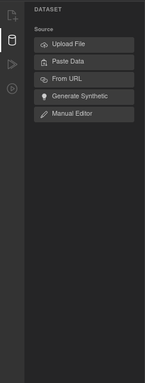
There are five ways to provide data:
Upload File — Select a .csv or .json file from your computer.
Paste Data — Paste CSV or JSON text directly into a text area.
From URL — Load a dataset from a remote URL.
Generate Synthetic — Create a synthetic dataset for quick experimentation. Available types:
• Moons — Two interleaving half-circles (2D, 2 classes).
• Circles — Concentric circles (2D, 2 classes).
• Spiral — Two interlocking spirals (2D, 2 classes).
• Gaussian Blobs — Clusters of points (2D, 2–20 clusters).
• Checkerboard — Grid pattern (2D, 2 classes).
Each comes with configurable sample count (10–10,000), noise level (0–1), and for Blobs, a cluster count (2–20).
Manual Editor — Opens a spreadsheet-like editor where you can create or edit data cell by cell.
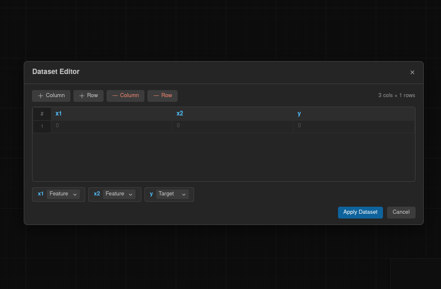
After loading data, a table appears showing the column headers and the first 15 rows. This is read-only — to edit, use the Manual Editor.
Each column is displayed with its name and type (numeric or categorical). For each column you can configure:
Feature / Target — Toggle whether the column is an input feature or the prediction target. Multiple columns can be features, but only one can be the target.
Normalization — Choose a normalization method:
• None — Use raw values.
• MinMax — Scale values to the 0–1 range.
• Standard — Z-score normalization (mean 0, standard deviation 1).
Configure how the dataset is divided for training:
Train % — Percentage of data used for training (10–100, default 70).
Validation % — Percentage reserved for validation (0–40).
Test % — Automatically calculated as the remainder.
Shuffle — Randomize the row order before splitting (enabled by default).
Random Seed — Set a seed for reproducible splits (default 42).
Once a dataset is loaded, the panel shows summary statistics: total rows, column count, and missing values. For numeric columns it displays mean, standard deviation, min, and max. For categorical columns it shows the unique value count.
The Train panel (sidebar icon 3, or press 3) controls the training process and displays progress metrics in real time.
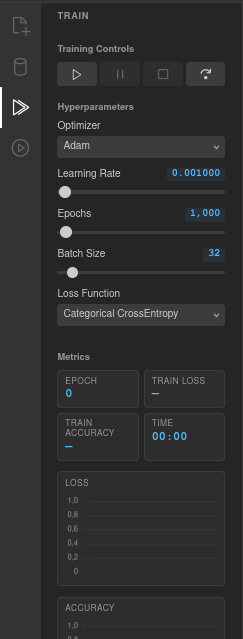
Four buttons control the training loop:
Play — Start training, or resume from a pause.
Pause — Pause the current training run.
Stop — Stop training entirely.
Step — Execute a single epoch, useful for step-by-step debugging.
Optimizer — The algorithm used to update weights. Options: Adam (default), SGD + Momentum, SGD, RMSprop.
Learning Rate — How much weights are adjusted each step. Range 0.0001–1, default 0.001. Use the slider or click the value to type a precise number.
Epochs — Total number of training iterations. Range 100–100,000, default 1,000.
Batch Size — Number of samples processed per weight update. Range 1–256, default 32.
Loss Function — How prediction error is measured. Options: MSE, Binary CrossEntropy, Categorical CrossEntropy, MAE, Huber.
During training, the panel shows live values for: Epoch (current count), Train Loss (6 decimal places), Train Accuracy (percentage), and Time (elapsed in MM:SS format).
Two real-time charts update as training progresses:
Loss chart (orange) — Plots the loss value at each epoch. A healthy training run shows a steadily decreasing curve.
Accuracy chart (green) — Plots the accuracy (0–1) at each epoch. For classification tasks, this should increase over time.
The Predict panel (sidebar icon 4, or press 4) lets you run the trained network on custom inputs and inspect its output.
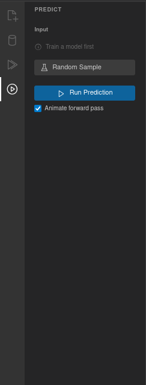
After training, the panel generates one input field for each feature column in your dataset, labeled with the column name. Enter values manually or use Random Sample to load a random row from the dataset (the expected target values are saved for comparison).
Click Run Prediction to execute a forward pass through the network with the current inputs.
Animate forward pass — When this checkbox is enabled (on by default), a particle animation flows through the connections as the prediction runs. Particles are colored blue for positive weights and red for negative, and the animation takes about 2 seconds.
Each output neuron is displayed with its name and value. For softmax outputs, values are shown as percentages (e.g., 45.23%). For regression or sigmoid outputs, the raw value is displayed with 6 decimal places. A bar visualization shows confidence, with the highest output highlighted.
If you loaded a random sample, the panel also shows the expected target values alongside the prediction. For multi-class classification, a ✓ Correct or ✗ Mismatch badge indicates whether the prediction matches.
For datasets with exactly 2 input features, a decision boundary visualization appears after training. It shows a colored grid representing the network's class predictions across the input space, with data points overlaid as colored dots. This helps you see how the network partitions the feature space.
The Properties panel appears on the right side of the screen when you select a layer or neuron. It lets you inspect and edit parameters directly.
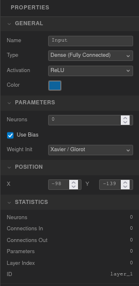
General — Name (editable text), Type (Dense, Input, or Output), Activation function (Linear, ReLU, Leaky ReLU, Sigmoid, Tanh, Softmax, ELU, GELU, Swish), and Color picker.
Parameters — Neuron count (0–64), Use Bias checkbox (on by default), Weight Initialization method (Random, Xavier/Glorot, He, Zeros).
Position — X and Y coordinates in pixels.
Statistics (read-only) — Neuron count, connections in/out, total parameters (weights + biases), layer index, and layer ID.
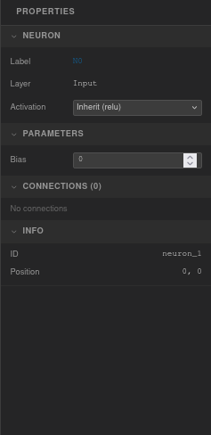
Neuron — Label (read-only, e.g. "N3"), parent layer name, and an activation dropdown. Choose Inherit to use the layer's activation function, or set a specific one for this neuron.
Parameters — Bias value (editable, step 0.01).
Connections — Lists all incoming and outgoing connections with their weight values. Each weight is editable directly in the panel.
Info (read-only) — Neuron ID and position coordinates.
When multiple layers are selected, the panel shows the layer count, total neurons, and a shared activation dropdown (displays "— mixed —" if activations differ). When multiple neurons are selected, only the neuron count is shown.
Each section in the panel can be collapsed or expanded by clicking its header. All changes are automatically saved to the undo/redo history.
VNNS lets you save and restore your networks, and export the canvas as an image. All options are in the File menu.
Press Ctrl+S (or File → Export Topology as JSON) to download a vnns-topology.json file. This file contains the full network structure: every layer (with ID, name, type, activation, position, style, and neurons with their biases) and every connection (with source/target neurons, layers, and weight values).
Press Ctrl+O (or File → Import Topology from JSON) to load a previously saved topology. The current network is cleared and replaced with the imported one, preserving all neuron IDs and layer structure.
File → Export Canvas as PNG saves the current canvas view as a vnns-network.png image at 2× resolution for crisp output on high-DPI displays.
Press Ctrl+Shift+N (or File → New Network) to clear the canvas and start fresh.
The Templates menu provides pre-configured networks that set up the full pipeline — layers, connections, dataset, optimizer, and hyperparameters — so you can start training immediately.
4 → 8 (ReLU) → 3 (Softmax). Iris-like dataset. Adam optimizer, learning rate 0.01, 2,000 epochs, batch size 16, Categorical CrossEntropy loss.
4 → 16 (ReLU) → 16 (ReLU) → 8 (ReLU) → 3 (Softmax). Iris-like dataset. Adam, learning rate 0.005, 3,000 epochs, batch size 16, Categorical CrossEntropy.
4 → 32 (ReLU) → 3 (Softmax). Iris-like dataset. Adam, learning rate 0.01, 2,000 epochs, batch size 16, Categorical CrossEntropy.
4 → 8 (ReLU) → 3 (ReLU) → 8 (ReLU) → 4 (Sigmoid). 8-dimensional pattern dataset. Adam, learning rate 0.005, 10,000 epochs, batch size 16, MSE loss.
2 → 8 (ReLU) → 1 (Sigmoid). XOR-like dataset. Adam, learning rate 0.01, 5,000 epochs, batch size 16, Binary CrossEntropy.
1 → 32 (ReLU) → 16 (ReLU) → 1 (Linear). sin(x) regression dataset. Adam, learning rate 0.003, 5,000 epochs, batch size 16, MSE loss.
Enter layer sizes as a comma-separated list (e.g., "4, 8, 3") and VNNS generates the architecture automatically. The first layer is set to Input (Linear), hidden layers use ReLU, and the output layer uses Sigmoid (single neuron) or Softmax (multiple neurons).